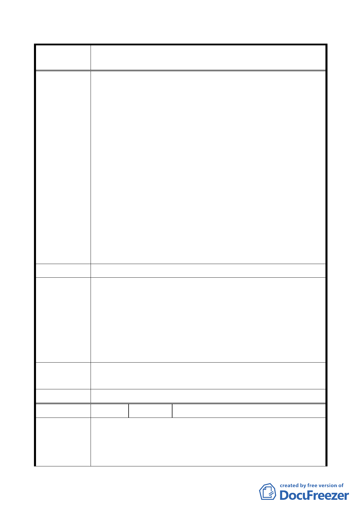

修訂本市都市計畫「臺北市山坡地開發建築要點」為「臺北市
案 名 都市計畫劃定山坡地開發建築管制規定」案
接已開闢都市計畫道路進深 30 公尺範圍內面積在 2
千平方公尺以上且不影響整體開發者」等情形，明定
得不受 2 萬平方公尺最小開發規模限制，並因開發規
模有限，另於第七條明定免申請開發許可。
（二）查上述零星山坡地開發建築案雖未經申請開發許可程
序，但於加強山坡地審查制度下，其雜項執照申請由
建築、都市計畫、地政、水土保持、環境保護、衛生
下水道等主管機關共同就規定項目予以審查，現行審
查項目完備，制度程序嚴謹，執行多年，並無問題。
（三）另查修正草案第六條之修正說明係就現行條文第七條
「條次變更、文字修正。明定申請開發許可之審議單
位。」而未涉增加未達規模山坡地建築開發案之法定
行政程序，故建請維持現行條文第七條第二項，就符
合現行條文第三條規定情形者，維持現行作業方式，
免申請閉發許可。
建議辦法
目前本市適用山開要點地區開發案件，不論開發規模大小，皆
須依「臺北市都市設計及土地使用開發許可審議委員會設置辦
市
府
回
應
法」提請本市都市設計及土地使用開發許可審議委員會(以下簡
稱「委員會」)審議，由委員會受理開發許可審議。為免申請者
說 明 誤解規模不足 2 公頃者毋須提送委員會審議，故刪除現行要點
第 7 條第 2 項「申請開發面積不足 2 公頃，且符合第 3 條規定
者，免申請開發許可」之規定。
專案小組
同「市府回應說明」。
審查意見
委 員 會 決 議 同「專案小組審查意見」。
編 號 6 陳情人
張瑞釗
一、依貴府 101 年 3 月 14 日府都築字第 1013015500 號公告公
開展覽辦理。
陳 情 理 由 二、經詳閱旨揭公告地區範圍示意圖與 貴府於 83 年 10 月修訂
公告之「保變住」22 處規定以市地重劃方式辦理開發地區
- 19 -